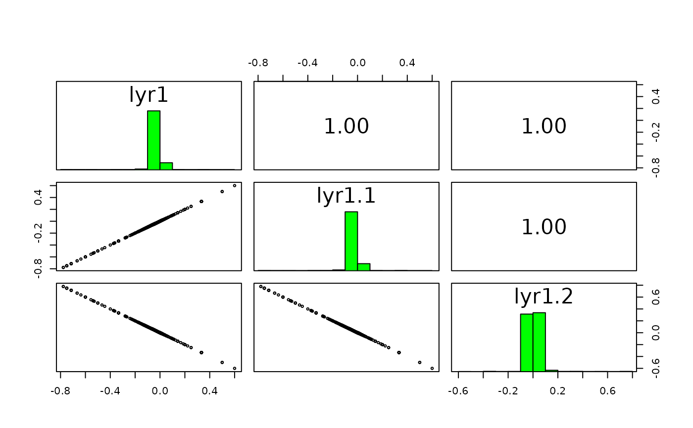

Apply a function to layers of a SpatRaster, or sub-datasets of a SpatRasterDataset
lapp.RdApply a function to a SpatRaster, using layers as arguments.
The number of arguments in function fun must match the number of layers in the SpatRaster (or the number of sub-datasets in the SpatRasterDataset). For example, if you want to multiply two layers, you could use this function: fun=function(x,y){return(x*y)} percentage: fun=function(x,y){return(100 * x / y)}. If you combine three layers you could use fun=function(x,y,z){return((x + y) * z)}
Before you use the function, test it to make sure that it is vectorized. That is, it should work for vectors longer than one, not only for single numbers. Or if the input SpatRaster(s) have multiple layers, it should work for a matrix (multiple cells) of input data (or matrices in the case of a SpatRasterDataSet). The function must return the same number of elements as its input vectors, or multiples of that. Also make sure that the function is NA-proof: it should returns the same number of values when some or all input values are NA. And the function must return a vector or a matrix, not a data.frame. To test it, run it with do.call(fun, data) (see examples).
Use app for summarize functions such as sum, that take any number of arguments; and tapp to do so for groups of layers.
Arguments
- x
SpatRaster or SpatRasterDataset
- fun
a function that takes a vector and can be applied to each cell of
x- ...
additional arguments to be passed to
fun- usenames
logical. Use the layer names (or dataset names if
xis a SpatRasterDataset) to match the function arguments? IfFALSE, argument matching is by position- cores
positive integer. If
cores > 1, a 'parallel' package cluster with that many cores is created and used. You can also supply a cluster object- recycle
logical. Recycle layers to match the subdataset with the largest number of layers
- filename
character. Output filename
- overwrite
logical. If
TRUE,filenameis overwritten- wopt
list with named options for writing files as in
writeRaster
Note
Use sapp or lapply to apply a function that takes a SpatRaster as argument to each layer of a SpatRaster (that is rarely necessary).
Examples
s <- rast(system.file("ex/logo.tif", package="terra")) + 1
ss <- s[[2:1]]
fvi <- function(x, y){ (x - y ) / (x + y) }
# test the function
data <- list(c(1:5,NA), 6:1)
do.call(fvi, data)
#> [1] -0.7142857 -0.4285714 -0.1428571 0.1428571 0.4285714 NA
x <- lapp(ss, fun=fvi )
# which is the same as supplying the layers to "fun"
# in some cases this will be much faster
y <- fvi(s[[2]], s[[1]])
f2 <- function(x, y, z){ (z - y + 1) / (x + y + 1) }
p1 <- lapp(s, fun=f2 )
p2 <- lapp(s[[1:2]], f2, z=200)
# the usenames argument
fvi2 <- function(red, green){ (red - green ) / (red + green) }
names(s)
#> [1] "red" "green" "blue"
x1 <- lapp(s[[1:2]], fvi2, usenames=TRUE)
x2 <- lapp(s[[2:1]], fvi2, usenames=TRUE)
# x1 and x2 are the same, despite the change in the order of the layers
# x4 is also the same, but x3 is not
x3 <- lapp(s[[2:1]], fvi2, usenames=FALSE)
x4 <- lapp(s, fvi2, usenames=TRUE)
# while this would fail because
# there are too many layers in s
# x5 <- lapp(s, fvi2, usenames=FALSE)
pairs(c(x1, x2, x3, x4))

## SpatRasterDataset
x <- sds(s, s[[1]]+50)
fun <- function(x, y) { x/y }
# test "fun"
data <- list(matrix(1:9, ncol=3), matrix(9:1, ncol=3))
do.call(fun, data)
#> [,1] [,2] [,3]
#> [1,] 0.1111111 0.6666667 2.333333
#> [2,] 0.2500000 1.0000000 4.000000
#> [3,] 0.4285714 1.5000000 9.000000
lapp(x, fun, recycle=TRUE)
#> class : SpatRaster
#> dimensions : 77, 101, 3 (nrow, ncol, nlyr)
#> resolution : 1, 1 (x, y)
#> extent : 0, 101, 0, 77 (xmin, xmax, ymin, ymax)
#> coord. ref. : Cartesian (Meter)
#> source(s) : memory
#> names : lyr.1, lyr.2, lyr.3
#> min values : 0.01960784, 0.01851852, 0.01694915
#> max values : 0.83660131, 0.88571429, 1.12359551
# the same, more concisely
z <- s / (s[[1]]+50)